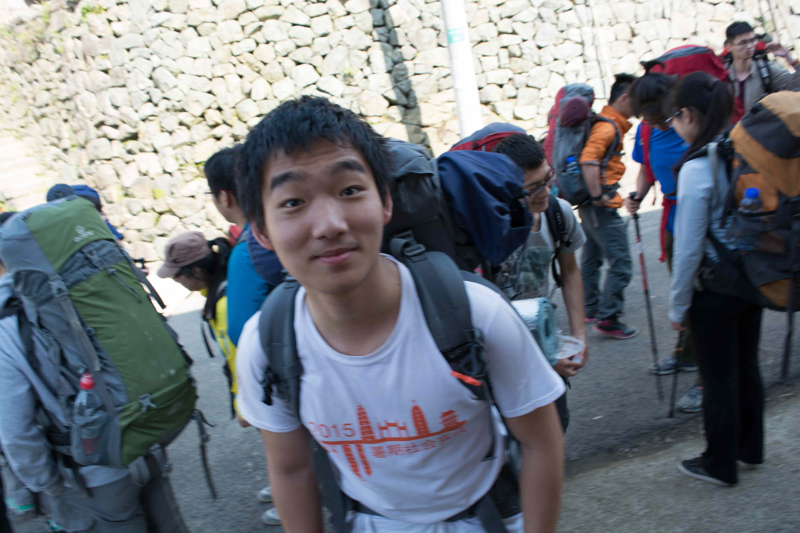
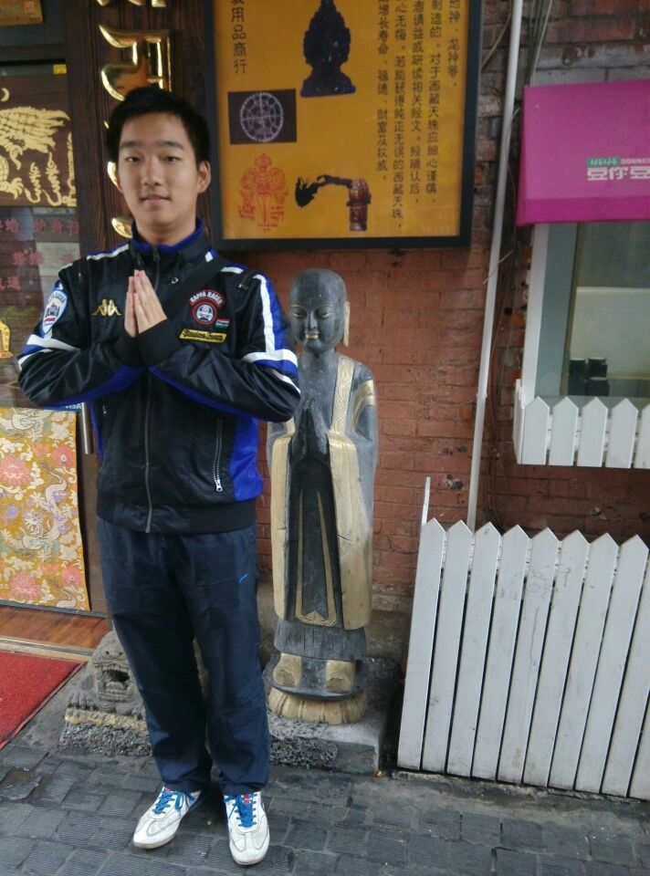
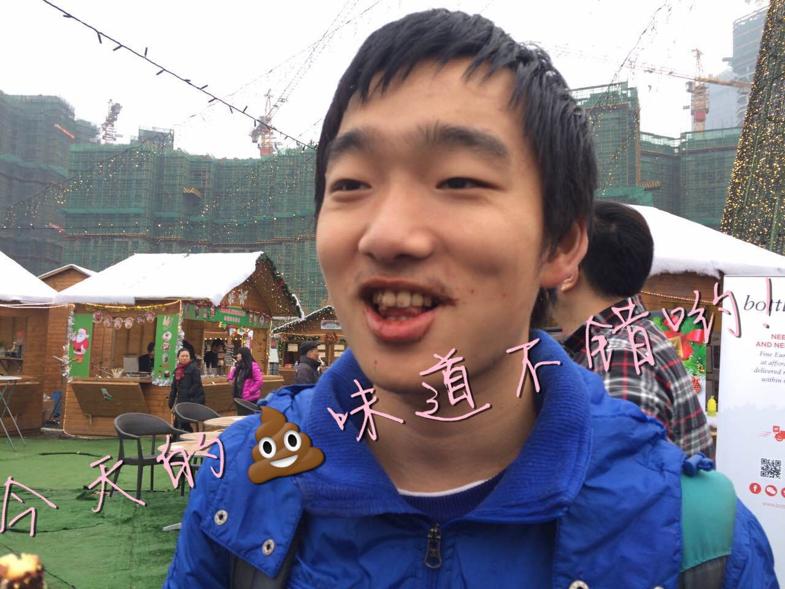
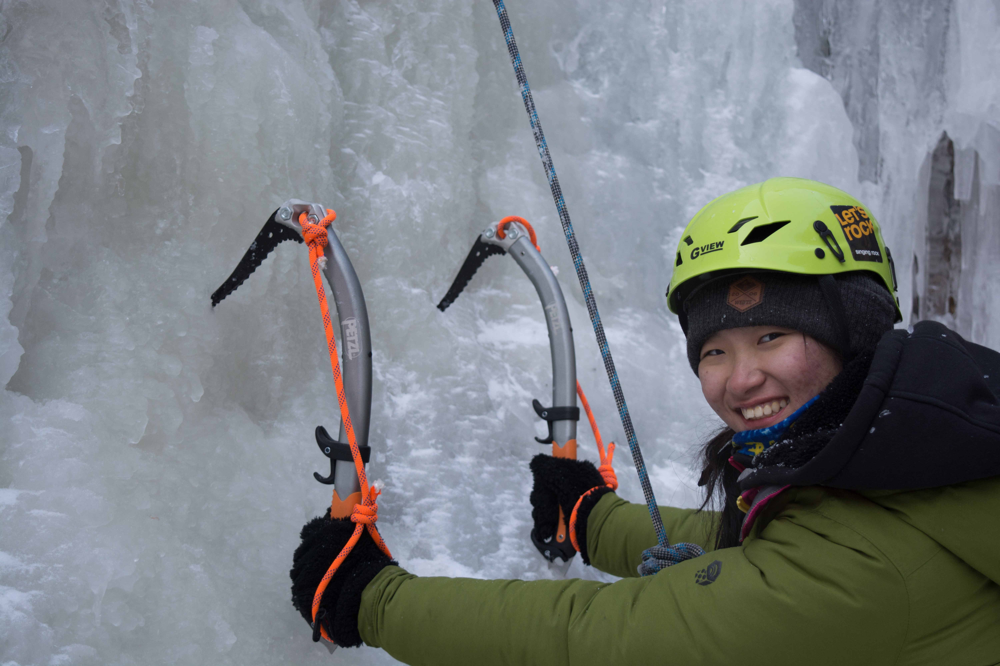

发信人: lvganyu (小雨儿), 信区: outdoor
标 题: 【团爆】会长大人们（下）
发信站: 饮水思源 (2016年12月21日16:04:59 星期三)
副会长：虞子傲
（快来膜小傲的满分作文！）
两年零一个月前，懵懂无知的我在学姐的“蛊惑”下加入了野协，我天真地以为出线
就是背着很多食物，踏着轻快的步伐，在山水之间与花草树木交流，在大自然里愉快地玩
耍。直到我出了我的第一条线路——昱岭关。看不到尽头的上山路线，无论走了多久，到
山顶都还有十五分钟；寒风凛冽的营地，借着头灯的一点光蜷缩在无尽的黑夜里；艰难险
阻的下山路，不断地滑倒，爬起，之后又会滑倒。但最后，我坚持下来了，而且，我爱上
了登山!没有夜的黑，就不会懂得光明的可贵；没有漫长的上山路，就不会燃起永不放弃的
信念。登山的路起起伏伏，登山的人俞攀俞勇。我喜欢上了这种感觉，也经常去和协会的
人一起出线，一起登山。
时光荏苒，不知不觉我已经在协会待了两年了，现在担任协会的副会长，也出了十几条
线路了，我很享受大家一起登山的氛围，希望接下来一年能和更多的人去更多的线路玩耍
！
 screen.width - 200){this.width = screen.width - 200}">
 screen.width - 200){this.width = screen.width - 200}">
 screen.width - 200){this.width = screen.width - 200}">
副会长：文颖
（羞涩の文lady以帮助在下要来所有人的团爆为代价换取了在下的代笔，虽然她很清楚在
下会黑她，啊不，他）
文颖，物理与天文系14级本科生。
大一在组织部和攀岩队混了一年，成功地混成了出线狂魔+岩馆达人。（+万年队记）
大二同时担任了四个部门的副部长+攀岩队副队长，为协会的发展操碎了心。（以至于从一
个有一点污的姑娘，变成了无时无处不可污的老司机。）
现在文爷，啊不，文lady，不只是协会的副会长，也是协会最神秘的部门——技术部的部
长。（也是技术部唯一一个长期部员）
文颖秉承着把有限的生命投入到无限的户外运动中去的原则，在加入协会以来的短短两年
多时间里，参加了一次雪山队（虽然因为肺炎没上山），两次冬训，走过了将近20条线，
去岩馆的次数不计其数。
然而最令我钦佩的是文颖对于虐线的执着。林林总总走过五六次七尖，又路远迢迢地跑到
五角场和复旦登协一起走了千八。先背着西瓜上了南武功（西瓜颖的由来），又拉起队伍
登了北太白。即使已经战果累累，每次提起鳌太，冬季太白或冬季鳌太，文lady还是会兴
奋得像小猫闻到了鱼罐头一样。（好吧，提到大五台，小五台，十字峡谷，泸沽湖，狼塔
……的时候，也是一样的==）
野协的每个人都无法否认的是文颖对协会的热爱。（简直就是行走的协会（黑）历史资料
库）
更无法否认的是她一以贯之的对于锻炼和训练的热情。
刻苦的训练和良好的身体素质造就了文lady汉子一般的体能。（以及汉子一般的性格）
而严格的自我要求和狂热的学习热情使文颖拥有了超越野协大部分干事的技术水准。
这就是我们优秀的副会长大人，技术部的大boss，文爷，啊不，文颖同学。
 screen.width - 200){this.width = screen.width - 200}">
screen.width - 200){this.width = screen.width - 200}">
（这两张照片真的是一个人，真的！ ）
--
( ・ˍ・) (・ˍ・*)
※ 来源:·饮水思源 bbs.sjtu.edu.cn·[FROM: 59.78.32.54]
|